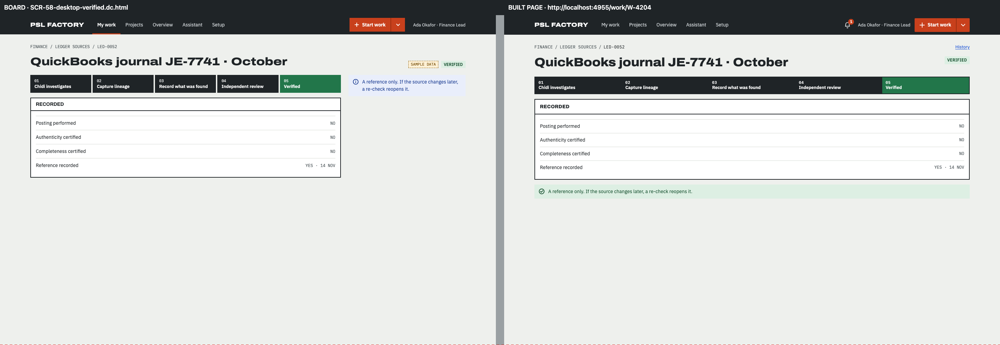
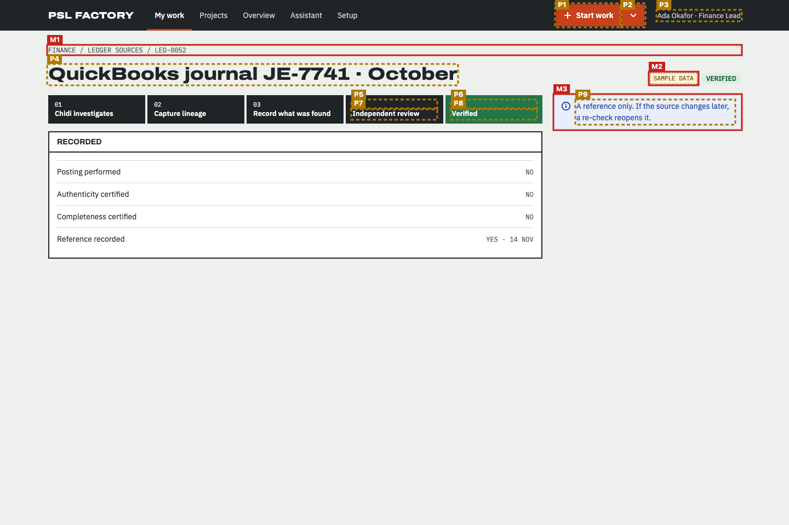
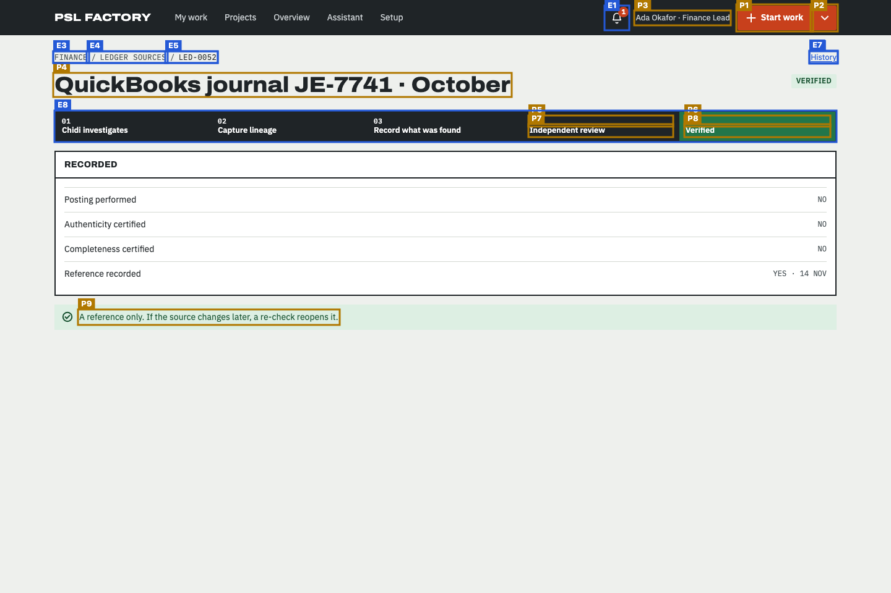
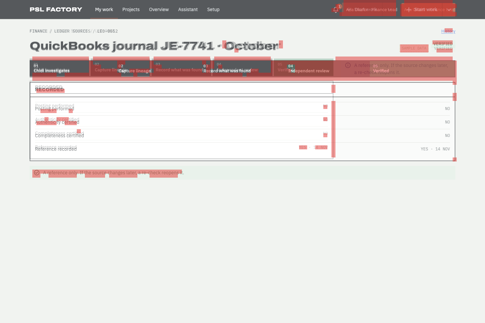

Does the built page follow the design?
Board SCR-58-desktop-verified.dc.html compared with http://localhost:4955/work/W-4204 at 1440px wide · 2026-11-19T03:20:15.431Z
- 1 board item(s) are missing from the page and are not approved exceptions (coverage 96.4% with exceptions, needs 100%).
- Visual match 80.5 is below 90.
- 9 item(s) are in a different place; review them (not part of the pass rule unless --strict-position).
25 of 28 things drawn on the board were found on the page: headings, buttons, links, search and filter controls, table columns, labels and the repeated rows (counted once, not per row).
How closely the shapes line up: blocks, bars, tables and text areas, compared in 12px squares over the top 960px. Different words in the same place still count as a match, so sample data does not lower the score.
Missing from the built page 3
Drawn on the board but not found on the page. Each one must be built, or approved as an exception.
| # | What | Text on the board | Where on the board | Exception |
|---|---|---|---|---|
| M1 | Text | FINANCE / LEDGER SOURCES / LED-0052 | middle, 84px down | approved Conflicts 12: the frame draws workspace.context.crumbs as a list of plain items (F-17/F-22/F-33/F-42 frame as built), not one text line; the words come from the crumbs. · builder proposal, pending design engineer |
| M2 | Text | SAMPLE DATA | right, 133px down | approved Design decision 14 Nov 2026 (c), restated in D-92: the visible SAMPLE DATA tag is off in team builds. Every fixture is sample: true, and the shared tag shows when the build sets NEXT_PUBLIC_SHOW_SAMPLE_LABEL=1 (component test on all 13 fixtures). Not a spec Conflicts item. · builder proposal, pending design engineer |
| M3 | Side panel | (side panel) | right, 174px down | — |
In a different place 9
Found on both, but in a different order, side of the page, or area (for example inside the table frame instead of above it).
| # | What | How it moved |
|---|---|---|
| P1 | Link Start work |
|
| P2 | Link More ways to start |
|
| P3 | Text Ada Okafor · Finance Lead |
|
| P4 | Heading QuickBooks journal JE-7741 · October |
|
| P5 | Text 04 |
|
| P6 | Text 05 |
|
| P7 | Text Independent review |
|
| P8 | Text Verified |
|
| P9 | Text A reference only. If the source changes later, a re-check reopens it. |
|
Looks different 6
Found on both, but styled differently: table rows and cells, fonts, colours, underlines, outlines, corners. Not part of the score; check each one against the board.
| What | Difference |
|---|---|
| Link "My work" |
|
| Link "Start work" |
|
| Link "More ways to start" |
|
| Heading "QuickBooks journal JE-7741 · October" |
|
| Text "RECORDED" |
|
| Text "A reference only. If the source changes later, a re-check reopens it." |
|
On the page but not on the board 8
Built but not drawn. Some are expected (data, status lines); the rest need the design engineer to approve or remove them.
| # | What | Text on the page | Where on the page |
|---|---|---|---|
| E1 | Button | Alerts, 1 unread | right, 11px down |
| E2 | Navigation area | Where this sits | left, 85px down |
| E3 | Text | FINANCE | left, 85px down |
| E4 | Text | LEDGER SOURCES | left, 85px down |
| E5 | Text | LED-0052 | left, 85px down |
| E6 | Navigation area | Work item | right, 85px down |
| E7 | Link | History | right, 84px down |
| E8 | list | Stations in order | middle, 181px down |
Pictures
The red dashed line on the side-by-side marks how far down the visual score looks. On the marked board, red boxes are missing items (M). On the marked page, amber boxes moved (P) and blue boxes are extra (E). In the difference picture both screens are laid over each other and red squares are where the shapes do not line up.






Notes about this run
- Images: /_blob/ images are served from /Users/Hunchoo/psl-factory-worktrees/f-45/design/mascots/canvas-assets.json (19 mapped).
Found on both (25)
| Navigation area | Main | |
| Text | PSL FACTORY | |
| Link | My work | |
| Link | Projects | |
| Link | Overview | |
| Link | Assistant | |
| Link | Setup | |
| Link | Start work | |
| Link | More ways to start | |
| Text | Ada Okafor · Finance Lead | |
| Main area | ||
| Heading | QuickBooks journal JE-7741 · October | |
| Text | VERIFIED | |
| Text | 01 | |
| Text | Chidi investigates | |
| Text | 02 | |
| Text | Capture lineage | |
| Text | 03 | |
| Text | Record what was found | |
| Text | 04 | |
| Text | Independent review | |
| Text | 05 | |
| Text | Verified | |
| Text | RECORDED | |
| Text | A reference only. If the source changes later, a re-check reopens it. |
How the scores are worked out
Element coverage. The board is drawn locally from its own template and sample data. From the drawn board the check lists everything a person sees or uses: page areas (navigation, main, search), headings, links, buttons, form fields with their labels, table column headers, filter, search and pagination controls and fixed labels. Rows drawn from sample data count once, as a pattern ("table rows with these columns"). Each item is looked for on the page by its kind and its words (ignoring capitals, curly quotes and small wording differences, at least 80% similar). Coverage is found ÷ drawn. Order is compared in reading order (top to bottom, left to right); an item is "moved" when it breaks the order, sits on the other side of the page, or sits inside a different area.
Visual match. Both full-page screenshots are compared in 12px squares after a light blur, over the board's height (960px; the page is 960px). Only squares with something in them count. A square matches when its colours line up, or when both have text or lines there. Score = matching ÷ counted squares (2979 of 3700). Over every square including empty background it would be 92.5.
Technical details
Board file: /Users/Hunchoo/psl-factory-worktrees/f-45/design/canvas/finance/project/SCR-58-desktop-verified.dc.html
Viewport: 1440×960
Report data: report.json
Exceptions file: /Users/Hunchoo/psl-factory/delivery/features/F-45/fidelity-exceptions.json